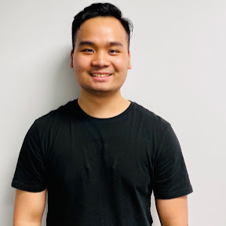

AARON PHAN
Software Developer
About me
I am excited to apply my skills and knowledge in a software development role.
I have completed internships and personal projects which have allowed me to
gain hands-on experience in full-stack software development, as well as
developing web applications and utilizing databases
using programming languages such as Java, MySQL, HTML, CSS, and Javascript.
I am eager to continue learning and gaining new software skills and
am excited for the opportunity to contribute to the team.
Skills
Technical Skills
- Frontend development with HTML, CSS, JavaScript, React
- Database design and database querying with SQL
- Code version control with Git
- Data analysis with Python, PowerBI and Splunk
Soft Skills
- Experience with working in Agile focused environment
- Teamwork
- Project Management
- Documentation and knowledge sharing
Work Experience
Terrapages Pty Ltd | Intern Software Engineer
Sep 2022 - Jan 2023
Key Responsibilities:
- Developed iOS mobile app's features using Swift, Xcode, and Apple software development framework.
- Wrote APIs to send and receive user interaction data to support the business analyst team.
- Analysed data with Postman and troubleshoot backend issue.
- Analysed customer feedback and create plan for next Sprint to improve software product.
- Responsible for the design and integration of new push notification feature for the application.
- Identify potential problems with UI logic and work with the design team to come up with a solution.
Sapio Pty Ltd | Intern System Engineer
July 2020 - Aug 2022
Key Responsibilities:
- Researched and collected data from security camera using API.
- Cleaning the data after collection using Python.
- Analysed data and built dashboard using Splunk and PowerBI.
- Performed network and server maintenance and health check tasks.
- Installation and configuration of computer hardware, software, operating systems, networks.
- Maintained documentation of systems, networks, and backups.
Education
University of Technology Sydney
Bachelor of Mechatronic Engineering (Honours)
Contact Detail
GitHub